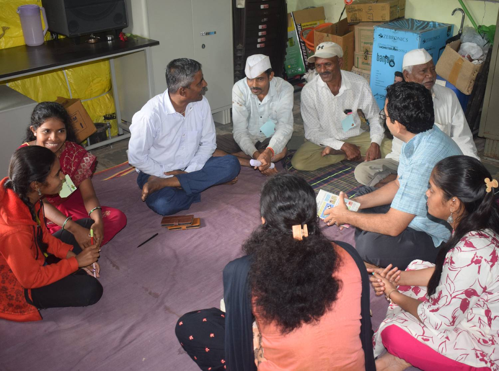
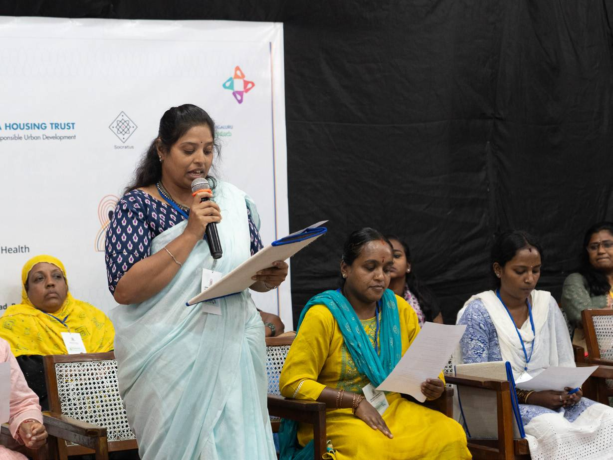
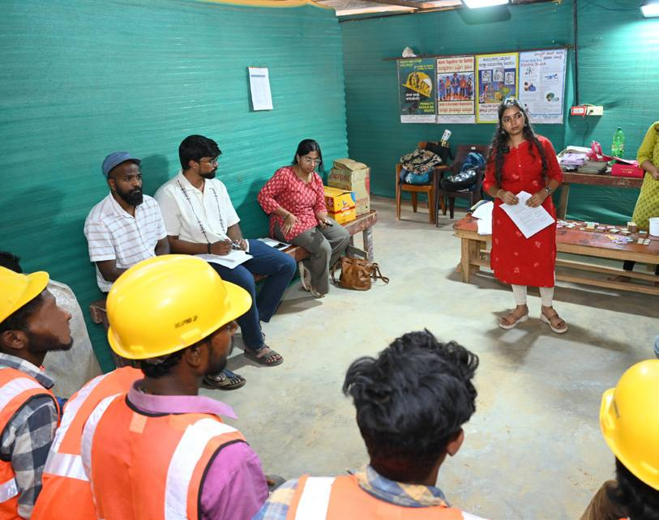
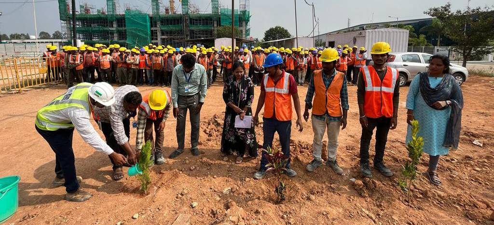

Outcome area 1
Strengthening community resilience through participatory approaches
Building on our evidence work for inclusive climate action
- Scale community-led climate vulnerability assessments to multiple wards with a common method, integrated with BCAP's city-level evidence
- Establish an annual city-level citizens' jury that draws on community assemblies to appraise BCAP's progress and shape the year ahead
- Build institutional feedback loops between community evidence and Climate Action Cell implementation
- Work towards stronger social protection for construction workers (BoCW) and waste pickers
Outcome area 2
Building and sharing a robust knowledge base
Building on our Community of Practice and ecosystem work
- A digital repository of partners' tools, methods and practice, culminating in an inclusive climate action toolkit other cities can adapt
- A peer learning programme to deepen collective expertise
- A learning lab to test and refine community adaptation strategies
- In-depth research on gaps in climate resilience and inclusion in existing policies and programmes
Outcome area 3
Shaping public narratives for fair futures
Building on our Community of Practice and evidence work
- A cohesive FFF identity and communication strategy, with mainstream media partners and an exhibition space
- A public multimedia platform for community climate resilience stories, aimed at audiences including government
- Targeted advocacy campaigns on key climate resilience priorities
- Climate communication in multiple languages on awareness, adaptation and access to resources
Outcome area 4
Supporting local government in fair climate action
Building on our policy engagement and advocacy
- Working groups aligned with BCAP priority areas, focused on mitigation and adaptation
- Technical support for ward and zonal climate action pilots
- Channels for participatory citizen evaluation to inform the Climate Action Cell's MER process and GBA's climate action budget
Outcome area 5
Prototyping and scaling context-responsive climate solutions
Building on our cross-sector collaboration
- A pipeline of technological and community-designed climate solutions for the city
- An impact network of actors who mobilise expertise and resources around citizen-defined priorities
- Pilot demonstrations on the most pressing vulnerabilities: water, heat and waste



